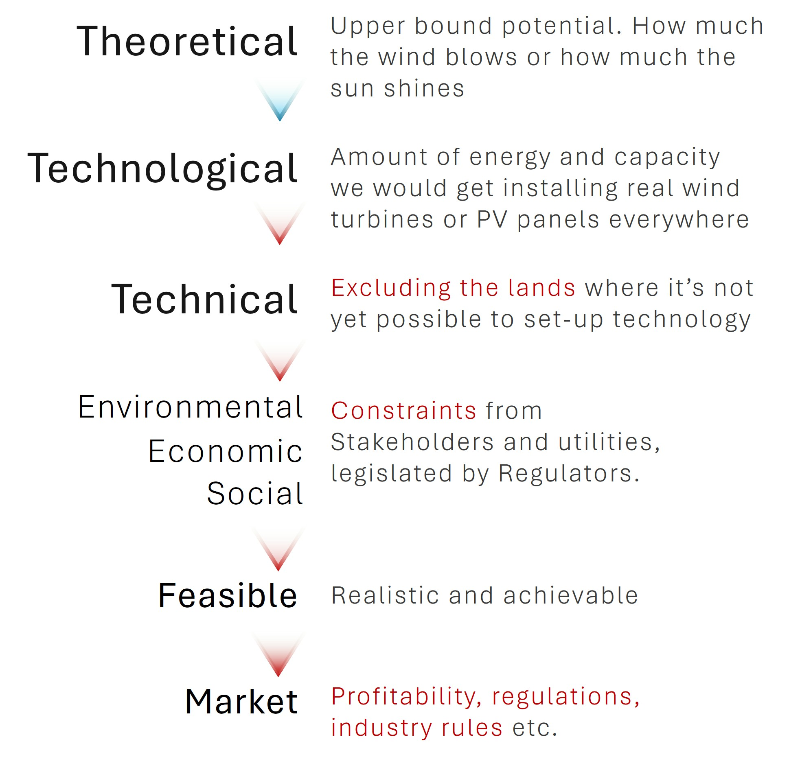
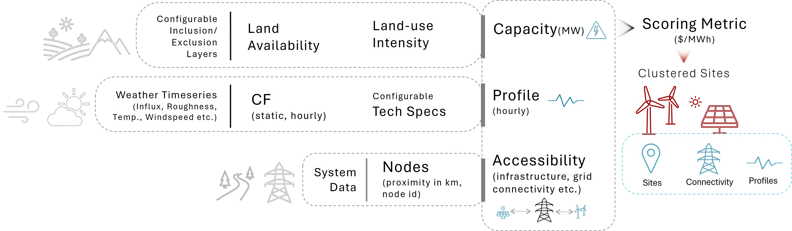

One of the many solutions ?
RESource#
A Modular and Transparent Open-Source Framework for Sub-National Assessment of Solar and Land-based Wind Potential.
Warning
This library is under heavy development
RESource is developed to enable reproducible, adaptable assessments of VRE potential that are sensitive to local constraints and planning priorities. We developed a structured, modular workflow that integrates geospatial, temporal, economic, and regulatory data to evaluate site suitability for solar and wind energy development. This structured methodology ensures transparency and transferability, allowing RESource to be adapted for different regions and scaled for long-term strategic energy planning.
Workflow overview#
Contents:
- RESource Builder Module
- Getting Started
- Conda Environment Setup for RESource
- RES APIs
- Case study: VRE site selection in British Columbia
- References
- Contributing Developers